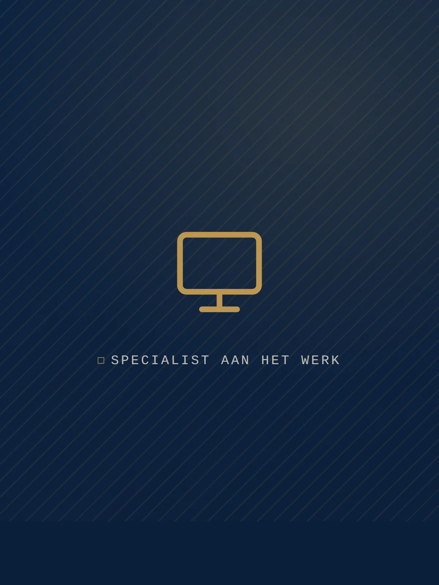

AI in het notariaatWat betekent AI voor een notariskantoor?
Met ‘AI’ bedoelen we in de praktijk vooral generatieve AI: taalmodellen die tekst kunnen samenvatten, doorzoeken, opstellen en herschrijven. Voor een notariskantoor is dat relevant omdat een groot deel van het werk tekst- en documentgedreven is — aktes, volmachten, dossiers, correspondentie en archief. AI vervangt de notaris niet. De juridische verantwoordelijkheid, de toetsing en de beëdiging blijven volledig bij de professional. Maar het kan routinematig en arbeidsintensief werk versnellen, zodat er meer tijd overblijft voor wat juist wél om menselijke aandacht vraagt: advies, oordeel en cliëntcontact.
Belangrijk is het onderscheid tussen publieke consumententools en zakelijke, afgeschermde AI. Een gratis chatbot stuurt uw invoer mogelijk naar externe servers en gebruikt die soms om modellen te trainen. Voor vertrouwelijke notariële gegevens is dat onacceptabel. Verantwoorde AI in het notariaat draait daarom in een omgeving waarin uw data afgeschermd blijft, binnen de Europese Unie wordt verwerkt en niet wordt gebruikt voor training van het onderliggende model. Dat onderscheid bepaalt of een toepassing überhaupt geschikt is voor de notariële praktijk.
Het is ook goed om de verwachtingen te kalibreren. AI is geen alwetende juridische assistent, maar een tekstverwerkende machine die patronen herkent. Hij ‘begrijpt’ het recht niet zoals een mens en kent uw specifieke kantoorpraktijk niet, tenzij u die expliciet aanlevert. Wie AI ziet als een ijverige maar onervaren stagiair — snel, behulpzaam, maar altijd te controleren — zit dicht bij de juiste werkhouding.
Praktische toepassingen van AI in het notariaat
AI levert het snelst waarde op afgebakende, goed controleerbare taken. Denk aan:
- Lange documenten en dossiers samenvatten en doorzoekbaar maken;
- Concepten en correspondentie opstellen op basis van vaste modellen en aangeleverde gegevens;
- Gegevens extraheren uit aangeleverde stukken (bijvoorbeeld uit uittreksels of identiteitsdocumenten) ter voorbereiding;
- Interne kennis en wetgeving sneller ontsluiten, zodat medewerkers minder zoektijd kwijt zijn;
- Cliëntvragen voorbereiden en e-mails concept-beantwoorden, met de medewerker als eindredacteur.
De rode draad: AI doet een eerste slag, de medewerker controleert en beslist. Juist die combinatie levert tijdwinst op zonder dat kwaliteit of zorgvuldigheid eronder lijdt. Een conceptbrief die normaal twintig minuten kost, staat in twee minuten klaar voor redactie. Een dossier van honderden pagina's wordt in seconden samengevat tot de kernpunten, waarna de medewerker gericht de bron raadpleegt. De winst zit zelden in één spectaculaire toepassing, maar in tientallen kleine handelingen die per dag optellen.
Tegelijk zijn er taken waar AI (nog) niet thuishoort. Het zelfstandig nemen van juridische beslissingen, het toetsen van wilsbekwaamheid, het beëdigen van een akte of het geven van een definitief advies blijven mensenwerk. Een nuttige vuistregel: laat AI vooral voorbereiden en ontsluiten, niet beslissen of vaststellen.
De risico's: vertrouwelijkheid, juistheid en toezicht
Tegenover de kansen staan reële risico's. Taalmodellen kunnen overtuigend klinkende maar onjuiste output geven (‘hallucinaties’), zeker bij juridische details, verwijzingen naar wetsartikelen of rechtspraak. De tekst léést correct, maar klopt inhoudelijk niet altijd — en dat is in het notariaat een serieus probleem. Daarnaast gelden het beroepsgeheim en de AVG onverkort: cliëntgegevens mogen niet zomaar in externe systemen belanden. En de notaris blijft eindverantwoordelijk voor elke akte — AI-output is een hulpmiddel, geen bron van waarheid.
Een onderschat risico is ‘schaduw-IT’: medewerkers die uit goede bedoelingen vertrouwelijke informatie in een publieke, gratis chatbot plakken om sneller te werken. Zonder duidelijk kader gebeurt dat vrijwel zeker. Het is daarom verstandiger om proactief een veilige, goedgekeurde tool aan te bieden dan om AI te verbieden — een verbod wordt in de praktijk toch omzeild en leidt juist tot onbeheerst gebruik.
Dit vraagt om duidelijke afspraken: welke tools mogen worden gebruikt, met welke gegevens, en hoe wordt output gecontroleerd. Leg dat vast in beknopt beleid dat medewerkers daadwerkelijk lezen, en zorg dat de techniek dat beleid ondersteunt — bijvoorbeeld door alleen de goedgekeurde, afgeschermde AI-omgeving binnen handbereik te zetten.
Verantwoord beginnen met AI in het notariaat
Een veilige start begint klein en gecontroleerd. Kies een afgeschermde, zakelijke AI-omgeving — bijvoorbeeld binnen uw bestaande Microsoft 365-omgeving — waarin gegevens niet voor training worden gebruikt en toegangsrechten goed zijn ingericht. Stel beknopt beleid op, train medewerkers in zowel de mogelijkheden als de grenzen, en houd de mens altijd in de lus. Begin met één of twee toepassingen waar de pijn het grootst is, meet het resultaat en breid daarna pas uit.
Een eenvoudig stappenplan helpt om gestructureerd te starten:
- Inventariseer waar in uw proces de meeste tijd verloren gaat aan repetitief tekstwerk;
- Kies een veilige tool met data-isolatie en Europese verwerking, het liefst gekoppeld aan uw bestaande werkplek;
- Maak afspraken over toegestane gegevens, controle en verantwoordelijkheid;
- Train een kleine groep medewerkers en verzamel hun ervaringen;
- Evalueer na enkele weken en schaal alleen op wat aantoonbaar werkt.
Zo bouwt u ervaring op zonder onaanvaardbare risico's te nemen, en wordt AI een vanzelfsprekend onderdeel van de werkdag in plaats van een losstaand experiment.
Legal IT helpt notariskantoren om AI verantwoord in te richten: van een veilig beheerde werkplek tot heldere afspraken over data en toegang. Bekijk onze diensten en oplossingen of neem contact op voor een vrijblijvende kennismaking.
Benieuwd wat dit voor uw kantoor betekent?
We denken graag met u mee — vrijblijvend en zonder verplichtingen.
Plan een gesprek →